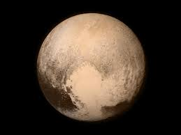

|  |
|
Plutón es un planeta enano que se encuentra en el cinturón de Kuiper. Es un área llena de objetos helados y otros planetas enanos en el borde de nuestro sistema solar. Debido a que Plutón es el objeto más grande conocido en esta región, algunos lo llaman "Rey del Cinturón de Kuiper". Una cosa es segura. Plutón y su vecindario son muy peculiares. Si los científicos pudieran desentrañar algunos de sus misterios, sabríamos más sobre cómo se formó nuestro sistema solar. El ancho de Plutón equivale solamente a la mitad de los Estados Unidos. Caronte tiene aproximadamente la mitad del tamaño de Plutón. En comparación con su planeta, ¡Caronte es la luna más grande del sistema solar! |